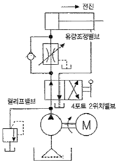
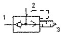
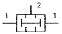
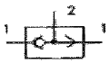
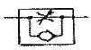
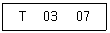
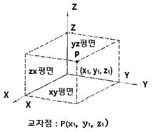

기계가공기능장 (2015-07-19 기출문제)
1과목: 임의 구분
1. 그림과 같이 실린더의 속도를 제어하기 위한 회로로서 유량조절밸브를 실린더의 입구측에 설치한 회로는?

- 무부하 회로
- 미터 인 회로
- 블리드 오프 회로
- 미터 아웃 회로
(정답률: 78%)

2. 압축공기의 건조 작용에 쓰이는 흡수식 건조기에 대한 설명 중 틀린 것은?
- 흡수과정은 화학적 과정이다.
- 사용되는 건조제는 폴리에틸렌 등이 있다.
- 운전비용이 적게 들고, 효율이 높다.
- 외부 에너지 공급이 필요하지 않다.
(정답률: 60%)
3. 유체의 흐름에는 층류와 난류가 있다. 어떤 경우에 난류가 가장 많이 발생하는가?
- 점도가 낮고 유속이 클 때
- 점도가 낮고 유속이 작을 때
- 점도가 높고 유속이 클 때
- 점도가 높고 유속이 작을 때
(정답률: 66%)
4. 난연성 유압에 대한 설명으로 적합한 것은?
- 윤활성이 우수하다.
- 점도가 높다.
- 내화성이 우수하다.
- 사용온도 범위가 좁다.
(정답률: 68%)
5. 공기압 실린더의 속도를 상승시키기 위하여 사용하는 급속 배기 밸브 기호는?




(정답률: 72%)
6. PLC에 사용되는 전원에 필요한 조건으로 틀린 것은?
- 정전압으로 오동작 방지
- 전원고장 대비를 위한 보호회로 불필요
- 입·출력전압과 내부구동 전압과의 절연유지
- 교류전원에서의 소음제거 및 외부소음에서의 오동작방지
(정답률: 80%)
7. 제어 시스템 중 시관과는 관계없이 입력신호의 변화에 의해서만 제어가 행해지는 것은?
- 논리 제어계
- 동기 제어계
- 비동기 제어계
- 시퀀스 제어계
(정답률: 46%)
8. 자동화시스템 보수유지관리의 장점으로 틀린 것은?
- 수리기간을 단축할 수 있다.
- 기계의 내구연수가 짧아진다.
- 생산품의 품질이 균일해진다.
- 자동화시스템을 항상 최상의 상태로 유지한다.
(정답률: 83%)
9. 공압 시스템의 고장원인으로 볼 수 없는 것은?
- 유압유의 변질
- 공압 밸브의 고장
- 수분으로 인한 고장
- 이물질로 인한 고장
(정답률: 82%)
10. 초음파 센서의 설명으로 틀린 것은?
- 스위칭 주파수가 아주 높다.
- 다양한 물체를 검출할 수 있다.
- 주위 영향이 적어 옥외 설치가 가능하다.
- 정확한 동작 위치를 선책 및 감지할 수 있다.
(정답률: 59%)
11. 밀링머신의 크기를 나타낼 때 테이블 좌우이송이 450mm, 새들 전후이송이 150mm, 니 상하이송이 300mm일 경우 밀링의 호칭번호는?
- No.0
- No.1
- No.2
- No.3
(정답률: 70%)
12. 3/8-16 UCN로 표시되어 있는 태핑을 위하여 드릴링 하려면 약 몇 mm 의 드릴이 적당한가? (단, 3/8-16 UNC의 피치는 1.5875mm이고, 암나사의 골지름은 9.525mm 이다.)
- 6
- 8
- 10
- 12
(정답률: 71%)
13. 슈퍼 피니싱 가공에서 숫돌의 운동은 초기가공에서 약 몇 mm 의 진폭으로 하는가?
- 0.5 ~ 1 mm
- 2 ~ 3 mm
- 5 ~ 10 mm
- 15 ~ 30 mm
(정답률: 72%)
14. 절삭공구를 재연삭하거나 새로운 절삭공구로 교체하기 위한 절삭공구의 일반적 공구수명 판정기준으로 옳은 것은?
- 절삭공구의 경사면과 여유면의 마모가 일정한 량에 도달할 때
- 절삭유의 온도가 일정온도에 달했을 때
- 공작물의 온도가 일정온도에 달했을 때
- 가공시 경작형 칩 형태에서 유동형 칩 형태로 변경되었을 때
(정답률: 84%)
15. 연삭작업시 연삭과열의 원인이 아닌 것은?
- 숫돌의 연삭깊이가 클 때
- 공작물의 열적성질이 클 때
- 숫돌의 원주속도가 클 때
- 건식연삭보다도 습식연삭일 때
(정답률: 82%)
16. 보링머신은 주축이 수평형과 수직형이 있다. 이 중 수평형 보링머신의 종류로 틀린 것은?
- 테이블(table)형
- 플로어(floor)형
- 크로스 레일(cross rail)형
- 플레이너(planer)형
(정답률: 74%)
17. 배럴가공은 배럴이라는 상자 속에 공작물가 미디어(media), 콤파운드(compound)를 넣고 회전시켜 연마하는 가공이다. 다음 중 미디어와 콤파운드에 대한 설명 중 틀린 것은?
- 스케일 제거용의 산성 콤파운드에는 염산, 황산을 주로 사용한다.
- 미디어로 많이 사용하는 천연 재료는 규석, 규사, 화강암, 석회석이 있다.
- 콤파운드는 스케일 제거, 변색 방지, 방청, 윤활 등의 목적으로 사용된다.
- 미디어로 많이 사용하는 인조 재료는 초경합금을 주성분으로 하는 괴상, 구상이 있다.
(정답률: 61%)
18. 선반에서 노즈 반지름(nose radius)이 0.2mm인 바이트를 사용하여 Hmax=6.3μm의 이론적 표면거칠기를 얻으려면 이송(feed)을 약 얼마하여야 하는가?
- 0.1 mm/rev
- 0.2 mm/rev
- 0.3 mm/rev
- 0.4 mm/rev
(정답률: 50%)
19. 숫돌의 결합제 중 유기질 결합제가 아닌 것은?
- 비트리파이드
- 셸락
- 고무
- 레지노이드
(정답률: 49%)
20. 연삭하려는 부품의 형상으로 연삭숫돌의 모양을 만드는 것을 무엇이라고 하는가?
- 로딩
- 글레이징
- 트루잉
- 채터링
(정답률: 78%)
2과목: 임의 구분
21. 공작물 중 비가공 부분을 감광성 내식피막으로 피복하는 가공법은?
- 화학연삭
- 화학절단
- 화학연마
- 화학블랭킹
(정답률: 72%)
22. 일반적으로 공구선반에서 릴리빙 장치를 이용하여 가공하지 않는 것은?
- 밀링커터
- 탭
- 호브
- 바이트
(정답률: 72%)
23. 밀링머시에서 절삭속도가 100m/min, 날 수가 10개, 지름이 100mm인 커터로 1날 당 이송을 0.4mm로 하여 공작물을 가공할 경우 테이블의 이송속도는 약 몇 mm/min인가?
- 1020
- 1273
- 1421
- 1635
(정답률: 74%)
24. 가공물의 재질에 따른 드릴의 날끝 각의 범위가 적절하지 못한 것은?
- 일반재료 : 118°
- 주철 : 90~118°
- 스테인리스강 : 60~70°
- 구리, 구리 합금 : 110~130°
(정답률: 84%)
25. 밀링가공에서 래크 절삭장치를 사용하는 것은?
- 수평 밀링머신
- 수직 밀링머신
- 생산형 밀링머신
- 만능 밀링머신
(정답률: 76%)
26. 액체 호닝에서 분사기구의 노즐과 공작물 표면에 대한 효율적인 분사각도는?
- 20~30°
- 30~40°
- 40~50°
- 50~60°
(정답률: 57%)
27. 온도를 측정하고자 하는 물체 표면에 칠을 하고 변색되는 부분을 판단하여 온도를 측정하는 방법으로 베어링, 열기관 등의 표면온도 측정에 이용되는 절삭온도 측정방법은?
- 칼로리미터를 사용하는 방법
- 시온 도료에 의한 방법
- 복사 고온계에 의한 방법
- Pbs 광전지를 이용한 온도 측정
(정답률: 78%)
28. 드릴파손의 원인으로 틀린 것은?
- 이송이 작아 절삭저항이 감소할 때
- 절삭 칩이 배출되지 못하고 가득 차 있을 때
- 드릴이 길게 고정되어 이송 중 휘어질 때
- 시닝(thinning)이 너무 큰 경우
(정답률: 78%)
29. 대형이고 무거운 가공물이어서 가공물을 이동시키면서 가공하기 곤란할 때, 사용하기 적합한 드릴링 머신은?
- 직립 드릴링 머신
- 레이디얼 드릴링 머신
- 다축 드릴링 머신
- 다두 드릴링 머신
(정답률: 83%)
30. 선반의 가로 이송대에 8mm의 리드로서 원주를 100등분하여 만든 칼라 눈금의 핸들이 달려 있을 때, 지름 34mm의 둥근막대를 지름 30mm로 절삭하려면 핸들의 눈금을 몇 눈금 돌리면 되는가?
- 25
- 30
- 50
- 60
(정답률: 80%)
31. 연삭작업에서 숫돌 결합제의 구비조건으로 틀린 것은?
- 입자 간에는 기공없이 치밀해야 한다.
- 결합력의 조절범위가 넓어야 한다.
- 성형성이 좋아야 한다.
- 열에 잘 견뎌야 한다.
(정답률: 76%)
32. 기어의 다듬지 가공시 호브의 이송을 가장 크게 할 수 있는 재료는?
- 공구강
- 경강
- 연강
- 주철
(정답률: 63%)
33. 프레스용 금형재료의 구비조건으로 틀린 것은?
- 인성이 클 것
- 내마모성이 클 것
- 기계가공성이 좋을 것
- 열처리 시 치수변화가 많을 것
(정답률: 86%)
34. 다이캐스팅용 Al합금에 요구되는 성질로 틀린 것은?
- 유동성이 좋을 것
- 열간취성이 적을 것
- 금형에 대한 점착성이 좋을 것
- 응고수축에 대한 용탕 보급성이 좋을 것
(정답률: 70%)
35. 탄성과 내마멸성, 내식성이 우수하여 스프링 재료로 가장 많이 쓰이는 청동합금은?
- Cu-Al계 청동
- Mn-Mg계 청동
- Cu-Si계 청동
- Cu-Sn-P계 청동
(정답률: 62%)
36. 표점거리 50mm, 직경 ø14mm인 인장시편을 시험한 후 시편을 측정한 결과 길이는 늘어나고 직경은 ø12mm로 줄어들었다면, 이 재료의 단면수축율은 약 몇 % 인가?
- 13.5
- 20.5
- 26.5
- 36.1
(정답률: 50%)
37. Fe-C 상태도에서 조직과 결정구조에 대한 설명 중 틀린 것은?
- δ-Fe는 체심입방구조이다.
- 펄라이트(Pearlite)는 공석반응에서 얻을 수 있다.
- 시멘타이트(Cementite)는 육방정(Hexagonal)구조이다.
- 레데뷰라이트(Ledeburite)는 오스테나이트+시멘타이트의 혼합물이다.
(정답률: 58%)
38. 주철이 고온에서 가열과 냉각을 반복하면 부피가 커져서 주철의 치수가 달라지고 강도나 수명이 감소되는 현상을 무엇이라 하는가?
- 주철의 성장
- 주철의 청열취성
- 주철의 자연 시효
- 주철의 적열취성
(정답률: 66%)
39. 탄소강의 연화 및 내부응력제거를 목적으로 적당한 온도까지 가열하고 그 온도를 어느 정도 유지한 다음 서서히 냉각시키는 열처리 방법은?
- 불림
- 풀림
- 담금질
- 뜨임
(정답률: 76%)
40. 표면거칠기 측정이 요구되는 주요 대상이 아닌 것은?
- 접착력 향상이 요구되는 부분
- 내식성 향상이 요구되는 부분
- 내면상태 향상이 요구되는 부분
- 기구적인 기능 향상이 요구되는 부분
(정답률: 44%)
3과목: 임의 구분
41. 참값이 1.732mm인 부품을 측정하였더니 1.7mm였다. 오차율은 약 몇 % 인가?
- 0.1
- 0.2
- 1
- 2
(정답률: 49%)
42. 나사의 정밀도에 대한 주요 점검대상이 아닌 것은?
- 피치
- 리드각
- 유효지름
- 산의 반각
(정답률: 54%)
43. 나사산의 각도 측정에 사용하는 측정기는?
- 투영기
- 틈새 게이지
- 와이어 게이지
- 나사 피치 게이지
(정답률: 73%)
44. 기어 호브(gear hob)의 측정요소가 아닌 것은?
- 외경의 떨림
- 웨브(web)의 두께
- 호브의 분할 오차
- 보스(boss)의 외경 및 측면의 떨림
(정답률: 68%)
45. 치공구 설계의 목적으로 거리가 먼 것은?
- 생산성을 높이기 위해
- 작업공정을 늘리기 위해
- 제품의 품질을 향상시키기 위해
- 제품의 제작비용을 절감하기 위해
(정답률: 90%)
46. 상자형 지그(box jig)에 관한 설명으로 틀린 것은?
- 칩 배출이 용이하다.
- 견고하게 클램핑 할 수 있다.
- 지그 제작비가 비교적 많이 든다.
- 지그를 회전시켜 여러면에서 가공할 수 있다.
(정답률: 57%)
47. 중심 결정에 이용되는 V블록에 있어서 120° V블록과 비교하여 60° V블록이 가지는 특징에 관한 설명으로 틀린 것은?
- 공작물의 수직 중심선이 쉽게 위치 결정된다.
- 공작물의 수평 중심선의 위치 결정이 다소 힘들다.
- 위치 결정점 간격이 넓어 기하학적 관리가 양호하다.
- 가까운 위치결정구 상에 공작물을 고정시키기 위해서 더욱 큰 고정력이 요구된다.
(정답률: 51%)
48. 작은 하중이 걸리는 작업은 주로 스프링에 의한 링크에 의해 작동되며 4가지(하향 잠김형, 압착형, 당기기형, 직선이동형) 기본적인 클램핑 작용으로 되어 있는 클램프는?
- 캠(cam) 클램프
- 토글(toggle) 클램프
- 스트랩(strap) 클램프
- 쐐기(wedge) 클램프
(정답률: 71%)
49. 치공구용 게이지에 있어서 한계게이지(limit gauge)의 장점에 관한 설명으로 틀린 것은?
- 합부 판정이 쉽다.
- 검사하기가 편하고 합리적이다.
- 타 제품에 공용하여 사용하기 쉽다.
- 취급이 단순하여 미숙련공도 사용이 가능하다.
(정답률: 76%)
50. 고급의 모델링 기법으로 공학적인 해석을 할 때 사용되며 여러 물맂거 성질(부피, 무게중심, 관성모멘트 등)이 제공되는 모델링은?
- 솔리드 모델링
- 서피스 모델링
- 투시도 모델링
- 와이어프레임 모델링
(정답률: 85%)
51. CNC선반의 공구기능(T기능)에서 아래와 같은 지령 중 “07” 부분의 지령이 “00”으로 명령되었을 때의 의미로 옳은 것은?

- 03번 공구의 보정을 취소한다.
- 보정기억장치의 00번을 불러 기억된 양만큼 보정한다.
- 보정기억장치의 03번을 불러 기억된 양만큼 보정한다.
- 공구 03번의 선택에 의해 공구대가 회전하여 절삭가공준비를 한다.
(정답률: 77%)
52. 아래 그림과 같이 X, Y, Z 방향의 축을 기준으로 공간상에서 하나의 점을 표시할 때 각축에 대한 X, Y, Z에 대응하는 좌표값으로 표시하는 좌표계는?

- 극 좌표계
- 직교 좌표계
- 원통 좌표계
- 구면 좌표계
(정답률: 66%)
53. 머시닝 센터 프로그램 작업 시 한 블록 내에서 아래와 같이 같은 내용의 워드를 두 개 이상 지령하면 어떻게 실행이 되는가?
- M08과 M09가 모두 실행된다.
- M08과 M09가 모두 무시된다.
- M08은 무시되고 M09가 실행된다.
- M08은 실행되고 M09는 무시된다.
(정답률: 79%)
54. CAM 소프트웨어를 이용하여 곡면을 가공할 때 곡면가공법이 아닌 것은?
- 잔삭가공
- 연삭가공
- 포켓가공
- 2D 윤곽가공
(정답률: 65%)
55. 로트에서 랜덤하게 시료를 추출하여 검사한 후 그 결과에 따라 로트의 합격, 불합격을 판정하는 검사방법을 무엇이라 하는가?
- 자주검사
- 간접검사
- 전수검사
- 샘플링검사
(정답률: 90%)
56. TPM 활동 체제 구축을 위한 5가지 기둥과 가장 거리가 먼 것은?
- 설비초기관리체계 구축 활동
- 설비효율하의 개별개선 활동
- 운전과 보전의 스킬 업 훈련 활동
- 설비경제성검토를 위한 설비투자분석 활동
(정답률: 61%)
57. 도수분포표에서 알 수 있는 정보로 가장 거리가 먼 것은?
- 로트 분포의 모양
- 100단위당 부적합 수
- 로트의 평균 및 표준편차
- 규격과의 비교를 통한 부적함품률의 추정
(정답률: 55%)
58. 자전거를 셀 방식으로 생산하는 공장에서, 자전거 1대당 소요공수가 14.5H 이며, 1일 8H, 월 25일 작업을 한다면 작업자 1명 당 월 생산 가능 대수는 몇 대인가? (단, 작업자의 생산종합효율은 80% 이다.)
- 10대
- 11대
- 13대
- 14대
(정답률: 59%)
59. ASME(American Society of Mechanical Engineers)에서 정의되고 있는 제품공정 분석표에 사용되는 기호 중 “저장(Storage)”을 표현한 것은?
- ○
- □
- ▽
- ⇨
(정답률: 77%)
60. 미리 정해진 일정단위 중에 포함된 부적합수에 의거 하여 공정을 관리할 때 사용되는 관리도는?
- c 관리도
- P 관리도
- X 관리도
- nP 관리도
(정답률: 57%)